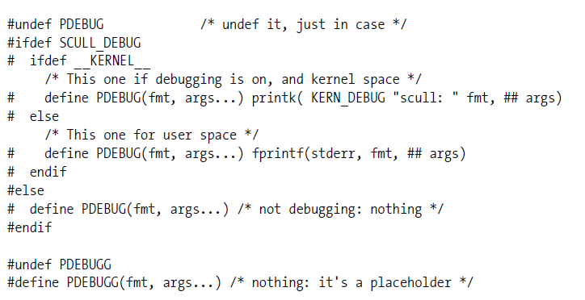
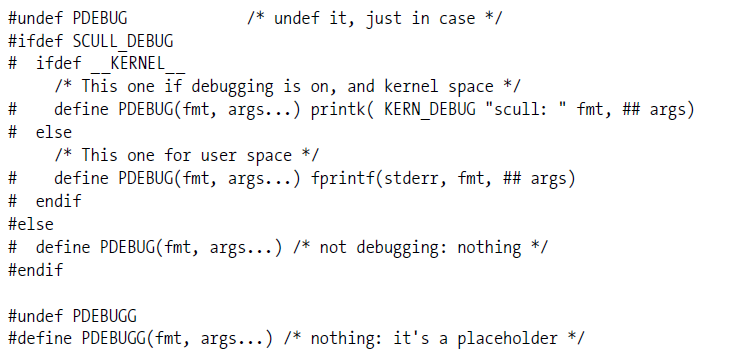

Select the challenges associated with kernel code debug (select any which apply).
The default kernel configuration on production kernels usually has debug features on by default
Kernel debug features may have performance impacts which should be considered before enabling on production builds.
You can debug kernel code using the same printf() command you use to debug user space programs.
Debug prints from your kernel module can be added using the printk() function
Select the possible ways of viewing the printk() prints from your driver.
When SCULL_DEBUG and __KERNEL__ are defined, where will the text from PDEBUG("test from driver"); be written?

When SCULL_DEBUG is not defined, where will the text from PDEBUG("test from driver"); be written?

The first step in kernel debugging is typically to use a debugger to analyze and step through your driver source.
GDB is able to analyze information about a running kernel using /proc/kcore
You can use gdb to halt, set breakpoints, or modify memory on a running kernel image using /proc/kcore